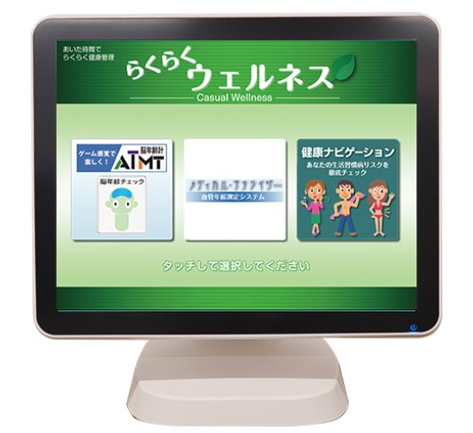

ヘルスサポート
Well-being!!
健康機器 無料測定イベント情報
- Event Info -
ほけん百花各店で開催予定の健康応援イベントをお知らせいたします。
健康機器のご紹介
-
InBody
InBody
筋肉・体水分・体脂肪などを約15秒で測定することができます。
複雑な操作は必要なく、痛みや不快感もありません。装置に乗って電極を握るだけです。
また、性別や年齢などの統計的な情報で体成分の結果を補正したりはせず、身長・体重・インピーダンスのみに基づいて体成分を算出します。 -
体組成計
体組成計
体重に加え、筋肉量や基礎代謝量、内臓脂肪レベル、推定骨量、体水分率などを測定することができます。
体組成計を利用すれば、体重計や体脂肪計ではわからなかった「筋肉量の減少」や「基礎代謝量の減少」、「内臓脂肪レベルの増加」などに気づくことができます。 -
血管年齢(iHeart)
血管年齢(iHeart)
脈波と血液中の酸素レベルをリアルタイムに測定し、動脈硬化リスクを30秒で測定することができます。
「動脈硬化」は心筋梗塞や脳梗塞などのリスクを高めることがわかっています。
通常、加齢とともに血管の弾力性は失われていきますが、運動不足や不健康な生活も動脈硬化の原因とされており、生活習慣病の一つと言われています。 -
骨健康度測定器
(骨ウェーブ)
骨健康度測定器(骨ウェーブ)
約40秒で簡単に骨のセルフチェックができます。
手首（トウ骨）に超音波を伝播させ、骨を透過した波の形から、骨健康度をＡ～Ｅまでの５段階で評価します。 -
脳年齢・血管年齢
(らくらくウエルネスCタイプ)脳年齢・血管年齢(らくらくウエルネスCタイプ)
タッチパネルを押しながら楽しく簡単、短時間で脳年齢・ストレス度を測定できます。
また、現在および将来の動脈硬化リスクも簡単にチェックでき血管年齢と血管スコアを表示します。 -
野菜摂取量測定機
(ベジチェック)野菜摂取量測定機(ベジチェック)
手のひらをセンサーに約30秒あてるだけで、皮膚カロテノイド量を測定し簡単に推定野菜摂取量を見える化できます。
野菜(特に緑黄色野菜)を食べると、野菜に含まれるカロテノイドが体に吸収され、やがて皮膚にも蓄積します。そのため、皮膚のカロテノイド量を測定すれば、野菜摂取量を推定することができます。 -
乳がん触診モデル
乳がん触診モデル
乳がんの早期発見につながる自己触診を、リアルに体験できるしこり付きの乳房モデルです。
乳がん・繊維腺腫・乳腺症のしこりのある状態を体感できます。
人体に近い状態で触診ができるように肋骨も表現しています。
健康関連情報リンク集
- Recommended Site -
健康関係セルフチェック集
- Self Check -